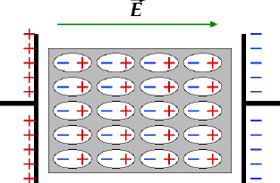

A dielectric material is an electrically insulating (nonmetallic) material that exhibits an electric dipole structure[cite: 11]. An electric dipole is simply the separation of positive and negative charges at the molecular or atomic level[cite: 11].
When placed in an electric field, these random dipoles are forced to align in one specific direction. This alignment process is called Electric Polarization[cite: 11].

Capacitors
Dielectric materials are primarily used inside Capacitors, which are components used to store electric energy[cite: 11]. When voltage is applied across a capacitor, one plate becomes positively charged and the other negatively charged[cite: 11].
By placing a dielectric material in the vacuum between the two plates, an additional opposing surface charge is induced within the dielectric. This balances out and allows the plates to dramatically increase their stored charge[cite: 11]. Capacitance is calculated as: C = ε(A / l), where 'ε' is the permittivity of the dielectric medium[cite: 11].
- Ceramic Examples: Barium titanate (BaTiO3), Aluminum oxide[cite: 11].
- Polymer Examples: Polyethylene (PE), Teflon (PTFE)[cite: 11].
- Mineral Examples: Mica, heavily used due to its high dielectric strength[cite: 11].
Practice Exercises
Test your knowledge on Dielectrics and Capacitors.
1. What defines a Dielectric material?
A) A highly conductive metal with free electrons
B) An electrically insulating material that exhibits an electric dipole structure
C) A pure intrinsic semiconductor like Silicon
2. What is "Electric Polarization"?
A) The flow of free electrons across a band gap
B) The breaking of covalent bonds inside an insulator
C) The alignment of electric dipoles in one direction due to an applied electric field
3. What is the primary engineering use for a Capacitor?
A) To store electric energy
B) To perfectly insulate a wire
C) To act as a thermal conductor
4. What happens when a dielectric material is placed between the plates of a capacitor?
A) The capacitance drops to zero
B) The plates short-circuit and spark
C) An opposing surface charge is induced, allowing the plates to store more charge
5. Which naturally occurring mineral is famously used in capacitors for its excellent dielectric properties?
A) Graphite
B) Mica
C) Quartz